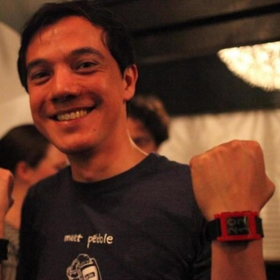

Hi, nice to meet you! I'm a seasoned software engineer. I help startups, scale-ups and large companies tackle product engineering challenges.
Focus areas:
I'm available for hire. Ping me on post@martijnthe.nl
Some examples of projects I have worked on:
For Intel's Vaunt smartglasses project, I worked on the app runtime inside the glasses. The runtime is written in C and runs apps which themselves are written in TypeScript. I also helped create an Electron-based device simulator desktop application that is part of the SDK.
At Fitbit, I led the initial proof-of-concept behind the JavaScript SDK for the Fitbit Ionic smartwatch, helping convince the management to pursue a JavaScript based SDK instead of a C based SDK. The runtime is based on JerryScript, a JavaScript interpreter for small embedded systems. It has been productized thereafter and released in the fall of 2017.
During my time at Pebble, I was the lead for Bluetooth connectivity for all Pebble products. This involved everything from evaluating Bluetooth chips and stacks, writing Bluetooth firmware code, debugging issues using packet sniffers and analyzing statistical data from products in the field to monitor connectivity performance.
Download my resumé for more detail.
Some of the things I have experience with: